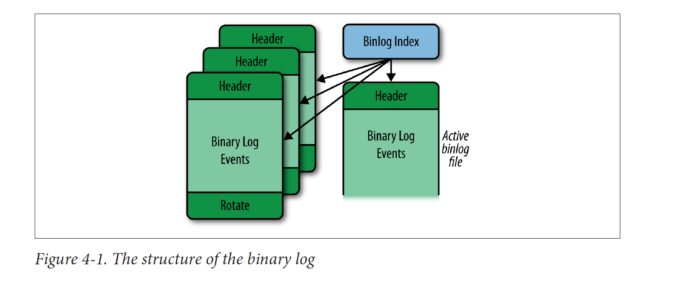
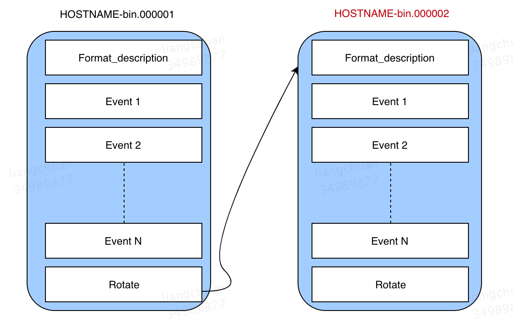
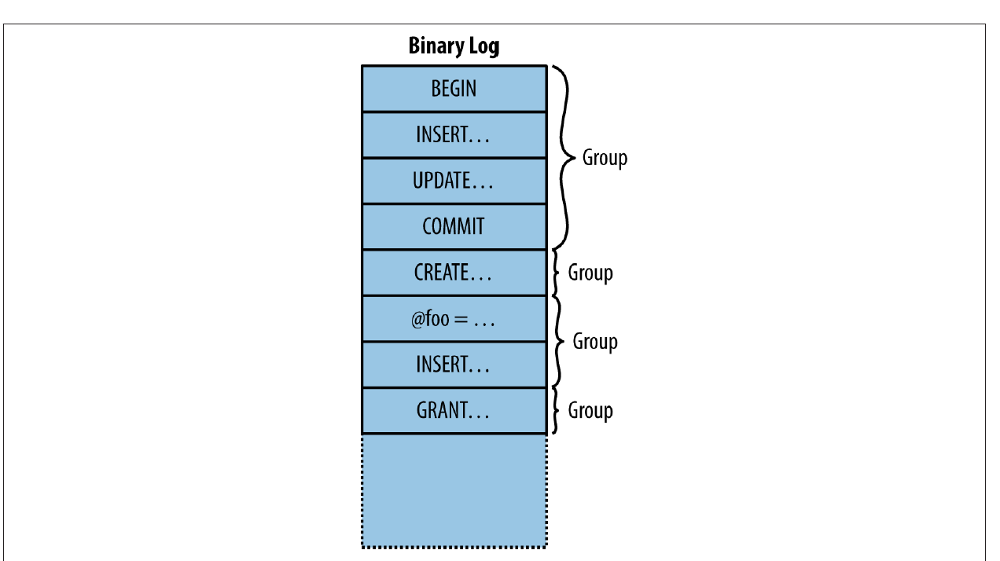
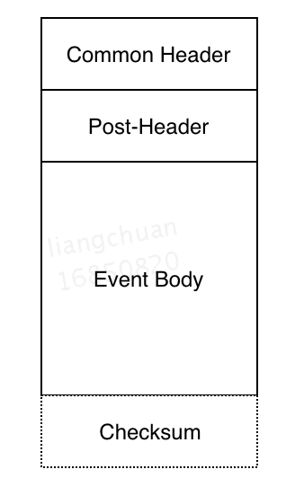
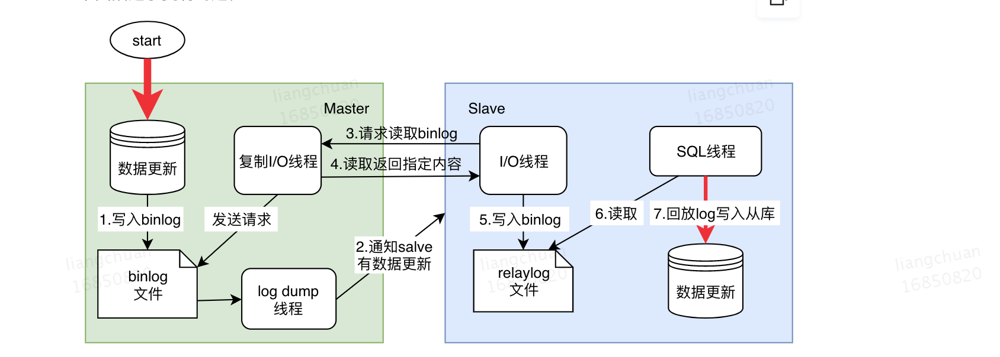
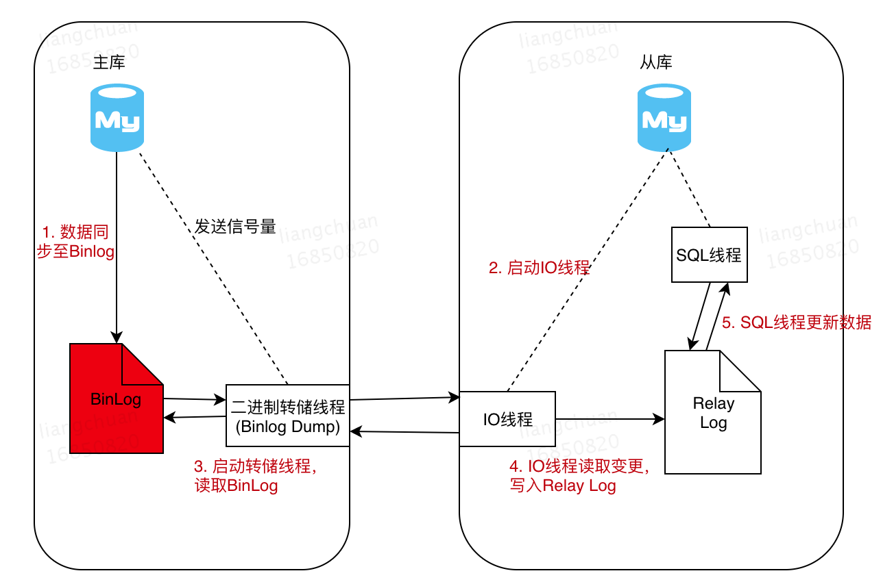
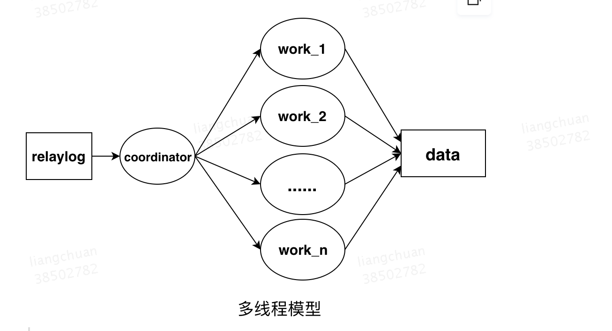
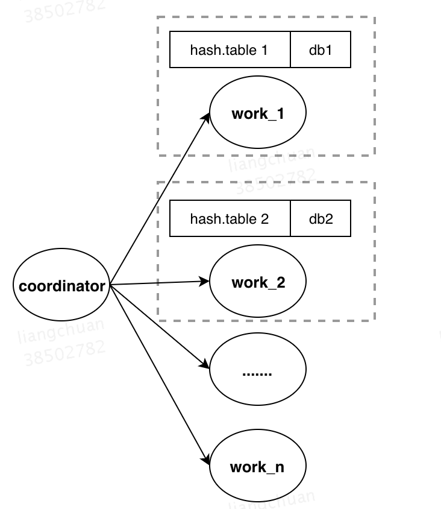
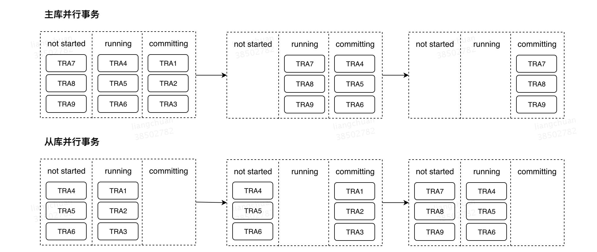

<!DOCTYPE html>
<html>
<head><meta name="generator" content="Hexo 3.9.0">
  <meta charset="utf-8">
  
  <title>MySQL 中的日志 | 守株阁</title>
  <meta name="viewport" content="width=device-width, initial-scale=1, maximum-scale=1">
  <meta name="description" content="Binlog初始定义BinLog 是记录 MySQL 实例数据变更的一个组件，日志中包含了一系列变更数据的操作，例如变更表结构、删除数据、更改/添加数据等 DML、DDL。这些操作在 BinLog 中统称为事件。 BinLog 记录什么，不记录什么BinLog 也会记录一些可能会发生数据变更的事件，例如没有找到对应行的 Delete 操作。 BinLog 不会记录纯查询，如 Select 和 Sh">
<meta name="keywords" content="数据库,MySQL">
<meta property="og:type" content="article">
<meta property="og:title" content="MySQL 中的日志">
<meta property="og:url" content="http://yoursite.com/2020/07/20/MySQL-中的日志/index.html">
<meta property="og:site_name" content="守株阁">
<meta property="og:description" content="Binlog初始定义BinLog 是记录 MySQL 实例数据变更的一个组件，日志中包含了一系列变更数据的操作，例如变更表结构、删除数据、更改/添加数据等 DML、DDL。这些操作在 BinLog 中统称为事件。 BinLog 记录什么，不记录什么BinLog 也会记录一些可能会发生数据变更的事件，例如没有找到对应行的 Delete 操作。 BinLog 不会记录纯查询，如 Select 和 Sh">
<meta property="og:locale" content="zh-Hans">
<meta property="og:image" content="http://yoursite.com/2020/07/20/MySQL-中的日志/binlog-structure.png">
<meta property="og:image" content="http://yoursite.com/2020/07/20/MySQL-中的日志/bin-log-file.png">
<meta property="og:image" content="http://yoursite.com/2020/07/20/MySQL-中的日志/bin-log-group.png">
<meta property="og:image" content="http://yoursite.com/2020/07/20/MySQL-中的日志/log-event-structure.png">
<meta property="og:image" content="http://yoursite.com/2020/07/20/MySQL-中的日志/主从复制1.png">
<meta property="og:image" content="http://yoursite.com/2020/07/20/MySQL-中的日志/主从复制2.png">
<meta property="og:image" content="http://yoursite.com/2020/07/20/MySQL-中的日志/并行复制.png">
<meta property="og:image" content="http://yoursite.com/2020/07/20/MySQL-中的日志/按库并行.png">
<meta property="og:image" content="http://yoursite.com/2020/07/20/MySQL-中的日志/redo-log组提交.png">
<meta property="og:updated_time" content="2020-10-04T10:04:02.029Z">
<meta name="twitter:card" content="summary">
<meta name="twitter:title" content="MySQL 中的日志">
<meta name="twitter:description" content="Binlog初始定义BinLog 是记录 MySQL 实例数据变更的一个组件，日志中包含了一系列变更数据的操作，例如变更表结构、删除数据、更改/添加数据等 DML、DDL。这些操作在 BinLog 中统称为事件。 BinLog 记录什么，不记录什么BinLog 也会记录一些可能会发生数据变更的事件，例如没有找到对应行的 Delete 操作。 BinLog 不会记录纯查询，如 Select 和 Sh">
<meta name="twitter:image" content="http://yoursite.com/2020/07/20/MySQL-中的日志/binlog-structure.png">
  
    <link rel="alternate" href="/atom.xml" title="守株阁" type="application/atom+xml">
  
  
    <link rel="icon" href="/favicon.png">
  
  
  <link rel="stylesheet" href="/css/style.css">
  

</head>
</html>
<body>
  <div id="container">
    <div id="wrap">
      <header id="header">
  <div id="banner"></div>
  <div id="header-outer" class="outer">
    <div id="header-title" class="inner">
      <h1 id="logo-wrap">
        <a href="/" id="logo">守株阁</a>
      </h1>
      
        <h2 id="subtitle-wrap">
          <a href="/" id="subtitle">一切都是守株待兔，如切如磋，如琢如磨。I am just joking.</a>
        </h2>
      
    </div>
    <div id="header-inner" class="inner">
      <nav id="main-nav">
        <a id="main-nav-toggle" class="nav-icon"></a>
        
          <a class="main-nav-link" href="/">Home</a>
        
          <a class="main-nav-link" href="/archives">Archives</a>
        
      </nav>
      <nav id="sub-nav">
        
          <a id="nav-rss-link" class="nav-icon" href="/atom.xml" title="RSS Feed"></a>
        
        <a id="nav-search-btn" class="nav-icon" title="Search"></a>
      </nav>
      <div id="search-form-wrap">
        <form action="//google.com/search" method="get" accept-charset="UTF-8" class="search-form"><input type="search" name="q" class="search-form-input" placeholder="Search"><button type="submit" class="search-form-submit">&#xF002;</button><input type="hidden" name="sitesearch" value="http://yoursite.com"></form>
      </div>
    </div>
  </div>
</header>
      <div class="outer">
        <section id="main"><article id="post-MySQL-中的日志" class="article article-type-post" itemscope itemprop="blogPost">
  <div class="article-meta">
    <a href="/2020/07/20/MySQL-中的日志/" class="article-date">
  <time datetime="2020-07-20T08:07:52.000Z" itemprop="datePublished">2020-07-20</time>
</a>
    
  </div>
  <div class="article-inner">
    
    
      <header class="article-header">
        
  
    <h1 class="article-title" itemprop="name">
      MySQL 中的日志
    </h1>
  

      </header>
    
    <div class="article-entry" itemprop="articleBody">
      
        <h1 id="Binlog"><a href="#Binlog" class="headerlink" title="Binlog"></a>Binlog</h1><h2 id="初始定义"><a href="#初始定义" class="headerlink" title="初始定义"></a>初始定义</h2><p>BinLog 是记录 MySQL 实例数据变更的一个组件，日志中包含了一系列变更数据的操作，例如变更表结构、删除数据、更改/添加数据等 DML、DDL。这些操作在 BinLog 中统称为事件。</p>
<h2 id="BinLog-记录什么，不记录什么"><a href="#BinLog-记录什么，不记录什么" class="headerlink" title="BinLog 记录什么，不记录什么"></a>BinLog 记录什么，不记录什么</h2><p>BinLog 也会记录一些可能会发生数据变更的事件，例如没有找到对应行的 Delete 操作。</p>
<p>BinLog 不会记录纯查询，如 Select 和 Show。那要查询所有语句的记录怎么办（比如要分析长事务）？需要查找<a href="https://dev.mysql.com/doc/refman/5.7/en/query-log.html" target="_blank" rel="noopener">通用查询日志</a>。</p>
<h2 id="用途"><a href="#用途" class="headerlink" title="用途"></a>用途</h2><ul>
<li>主从同步：在主从同步的过程中，Binlog用于记录主库的数据变更，然后这些记录被主库内的<strong>线程</strong>发送至从库。从库的<strong>工作线程</strong>再把接收到的变更事件放到从库上执行，完成数据同步。主从同步通常被视为提升数据库吞吐能力的一种方法，因此Binlog是必不可少的环节。</li>
<li>数据恢复： 在生产环境中，总是会有意外导致数据丢失。在一些数据恢复的场景中，Binlog是必不可少的。当数据库从备份中恢复的时候，binlog中所记录的信息会在恢复后的数据上执行，补齐备份数据中未备份的记录。<strong>注意，这里的数据恢复不包括数据回滚，回滚依赖于 undo-log。</strong></li>
</ul>
<h2 id="BinLog-结构"><a href="#BinLog-结构" class="headerlink" title="BinLog 结构"></a>BinLog 结构</h2><p></p>
<p>从上图可以看出，一个完整的binlog由两种文件组成</p>
<ol>
<li>索引文件(Index File)：</li>
</ol>
<p>索引文件用于跟踪多个binlog文件，便于主库创建新的binlog文件。索引文件中的每一行记录着所有关联和它关联的binlog文件名。在系统中，索引文件的文件名为{Host名}-bin.index</p>
<ol start="2">
<li>日志文件(Binlog file)：</li>
</ol>
<p></p>
<p>日志文件是binlog的主体，如上图所示，它是由一系列事件(Binary Log Events)组成。在系统中，文件名为{Host名}-bin.NNNNNN。 后缀为六个数字用于区分不同的日志文件。</p>
<p>日志文件的开头记录的是的是 Format_description 事件，这个事件记录主库的信息和日志文件的状态。如果主库突然宕机或者重启，主库会重新创建一个日志文件然后在开头写入Format_description。<br>当主库记录完成变更事件后，主库会写入Rotate事件。Rotate事件会指定下一个日志文件的文件名和读取事件的起始点。</p>
<h2 id="BinLog-分组"><a href="#BinLog-分组" class="headerlink" title="BinLog 分组"></a>BinLog 分组</h2><p>除开上述的Format_description事件和Rotate事件，日志文件都会把其他的变更事件进行分组(Group)。在MySQL中，每一个事务会被分成一组，组中包含了这个事务下执行的所有语句。一些非事务性语句会被单独分成一组，如Create和Alter语句等。如下图所示：</p>
<p></p>
<p>MySQL能确保每一组变更的原子性，要么不执行，要么执行完每一个组的所有语句。在主从同步中，如果从库在同步过程突然中止，当从库重新启动后，从库会重新执行一个组的变更，而不是重新执行被终止的语句。如图中所示，当update被终止后，从库下次启动时会从Begin开始执行而不是从update开始执行（原子性会从 begin 开始，所以事务里的语句总是幂等的）。</p>
<h2 id="日志格式"><a href="#日志格式" class="headerlink" title="日志格式"></a>日志格式</h2><p>上个部分我们介绍了binlog日志的结构，知道每一个binlog日志是由多个事件组成的。为了方便阐述，文中默认每个事件都是执行的语句或者一个完整事务。在早期的MySQL版本中，这是binlog日志唯一的格式。自从MySQL5.1起，日志的格式增加到了三种：</p>
<ol>
<li><p><strong>Statement-based（我们实际上最习惯的是这种语句）</strong>： 这是MySQL默认的日志格式。在这个格式下，binlog日志中记录的是变更数据库的执行语句和事务。</p>
</li>
<li><p><strong>Row-based</strong>:  在这个格式下，binlog日志中记录的是发生变更的数据行。</p>
</li>
<li><p>Mixed-logging: 这个格式是前两种格式的混合版，主库会根据执行的语句来决定binlog日志中记录的内容，可以是具体的行，也可以是执行的语句。</p>
</li>
</ol>
<p><strong>其实 Row-based 的 binlog 的设计逻辑近于 balance 数据（或者状态数据），而 Statement-based 的设计逻辑近于 transaction 数据（或者流水数据）。</strong></p>
<p>每个日志格式都有其对应的优缺点，因为mixed-logging在实际生产环境中不常用。在这里仅对row-based和statement-based做比较，总结如下表：</p>
<table>
<thead>
<tr>
<th style="text-align:center">格式</th>
<th style="text-align:center">优点</th>
<th style="text-align:center">缺点</th>
</tr>
</thead>
<tbody>
<tr>
<td style="text-align:center">Statement-based</td>
<td style="text-align:center">1. 较少的日志大小 2. 因为记录了所有执行语句，所以可以方便的做后期审计。</td>
<td style="text-align:center">不适用于包含以下函数的语句：如USER(), UUID(), UUID_SHORT(), NOW()</td>
</tr>
</tbody>
</table>
<p>不适用于不稳定的语句，如带Limit的Delete和Update语句|<br>|Row-based|1. 记录了所有实际变更的数据，准确性高</p>
<ol start="2">
<li>对于Insert, update 和 delete语句，所需要的行锁大大降低|日志文件大，IO耗费较大|</li>
</ol>
<h2 id="日志事件结构"><a href="#日志事件结构" class="headerlink" title="日志事件结构"></a>日志事件结构</h2><p></p>
<p>每个 binlog 事件由四个部分组成：</p>
<ol>
<li>通用 Header：这里存放事件的基本信息：事件类型和事件数据大小。</li>
<li>Post Header：存放特定事件类型的相关信息。</li>
<li>事件实体：存储事件的数据，如执行过的语句和变更的实际数据。</li>
<li>Checksum：MySQL 5.6 新增的功能，用作检查数据是否损坏。</li>
</ol>
<h2 id="主从同步"><a href="#主从同步" class="headerlink" title="主从同步"></a>主从同步</h2><p>mysql主从复制需要三个线程：master（binlog dump thread）、slave（I/O thread 、SQL thread）：</p>
<p>binlog dump线程：主库中有数据更新时，根据设置的binlog格式，将更新的事件类型写入到主库的binlog文件中，并创建log dump线程通知slave有数据更新。当I/O线程请求日志内容时，将此时的binlog名称和当前更新的位置同时传给slave的I/O线程。</p>
<p>I/O线程：该线程会连接到master，向log dump线程请求一份指定binlog文件位置的副本，并将请求回来的binlog存到本地的relay log中。</p>
<p>SQL线程：该线程检测到relay log有更新后，会读取并在本地做redo操作，将发生在主库的事件在本地重新执行一遍，来保证主从数据同步。</p>
<p></p>
<ol>
<li>主库写入数据并且生成binlog文件。该过程中MySQL将事务串行的写入二进制日志，即使事务中的语句都是<strong>交叉执行的（binlog 的生成有将事物序列化的机制）</strong>。</li>
<li>在事件写入二进制日志完成后，master 通知存储引擎提交事务（<strong>binlog 也是 WAL！</strong>）。</li>
<li>从库服务器上的 IO 线程连接 Master 服务器，请求从执行 binlog 日志文件中的指定位置开始读取 binlog 至从库。</li>
<li>主库接收到从库的 IO 线程请求后，其上复制的 IO 线程会根据 Slave 的请求信息分批读取 binlog 文件然后返回给从库的IO线程。</li>
<li>Slave服务器的IO线程获取到 Master 服务器上 IO 线程发送的日志内容、日志文件及位置点后，会将binlog日志内容依次写到 Slave 端自身的 Relay Log（即中继日志）文件的最末端，并将新的 binlog 文件名和位置记录到 master-info 文件中，以便下一次读取 master 端新binlog日志时能告诉 Master 服务器从新 binlog 日志的指定文件及位置开始读取新的 binlog 日志内容。</li>
<li>从库服务器的 SQL 线程会实时监测到本地Relay Log中新增了日志内容，然后把 RelayLog 中的日志翻译成SQL并且按照顺序执行SQL来更新从库的数据。</li>
<li>从库在relay-log.info中记录当前应用中继日志的文件名和位置点以便下一次数据复制。</li>
</ol>
<p>主从复制的线程流程，和 Redis 的线程有点像。</p>
<p></p>
<p>Binlog是主从同步中的重要一环，如上图所示。</p>
<p>不同的binlog日志格式会影响从库的同步方式。在statement-based格式下，从库是直接执行binlog日志中读取到的语句或者事务。在row-based格式下，从库是根据日志内容直接更新对应的数据。</p>
<p>MySQL默认的日志格式是statement-based。在大多数主从同步的场景下，日志格式采用row-based<strong>（大多数情况下不使用默认配置）</strong>，最主要的原因是row-based格式下，日志内容都是真实发生变更的数据，从库的数据准确性有很高的保证。</p>
<h2 id="数据恢复"><a href="#数据恢复" class="headerlink" title="数据恢复"></a>数据恢复</h2><p>在生产环境中，数据很有可能发生意外丢失。人为的操作失误往往会导致“删库跑路”的结局。为了应对各种意外的情况，数据库会周期性的做备份。当数据意外丢失后，备份数据可以拿过来恢复。然而，即使数据做了备份，也不能完全恢复到丢失那一刻的数据。</p>
<blockquote>
<p>假设某数据库每一个整点备份一次，上午10点数据库备份了一次，而10：30分，数据库突然丢失数据。</p>
<p>这时候我们会立刻拿备份数据导入到生产数据库中，然而我们只能恢复到上午10点时的数据，10：00 ~<br>10：30那段时间的数据并没有被导入备份，还是会缺失一部分数据。</p>
<p>所以，这30分钟的数据怎么恢复呢？</p>
</blockquote>
<p>这里就用到了 MySQL 的Point-In-time recovery(简称PITR)功能，PITR是用于恢复某个时间点的失效数据，用于弥补备份时间点到失效时间点这段数据“真空期”，实现这个功能的核心是binlog日志文件。</p>
<p>在详解binlog日志时我们了解到，binlog日志中存放着数据库所有的变更。PITR的原理很简单，就是将binlog内存储的变更数据重新执行一遍。需要恢复数据时，用mysqlbinlog命令执行binlog日志的内容。</p>
<pre><code class="bash">-- mysqlbinlog 也可以手动执行
mysqlbinlog binlog_files | mysql -u root -p
</code></pre>
<p>PITR可以选定时间范围和位置范围来选择性恢复数据：</p>
<ol>
<li>时间范围模式，使用–start-datetime或者–stop-datetime 变量。下图的含义是读取该binlog日志stop-datetime之前的所有变更：</li>
</ol>
<pre><code class="bash">mysqlbinlog --stop-datetime=&quot;2005-04-20 9:59:59&quot; \
         /var/log/mysql/bin.123456 | mysql -u root -p
</code></pre>
<ol start="2">
<li>日志位置模式，使用–start-position和 –stop-position 变量选择日志内的起始位置，如下图：</li>
</ol>
<pre><code class="bash">-- 指定停止位置
mysqlbinlog --stop-position=368312 /var/log/mysql/bin.123456 \
         | mysql -u root -p
-- 指定开始位置
mysqlbinlog --start-position=368315 /var/log/mysql/bin.123456 \
         | mysql -u root -p
</code></pre>
<h2 id="Binlog-不同于-Redo-log"><a href="#Binlog-不同于-Redo-log" class="headerlink" title="Binlog 不同于 Redo log"></a>Binlog 不同于 Redo log</h2><p>redo log有着和binlog 类似的功能，它也记录了变更数据库的信息，但是它和binlog还是有区别的，具体区别如下：</p>
<table>
<thead>
<tr>
<th style="text-align:center">日志类型</th>
<th style="text-align:center">Bin Log</th>
<th style="text-align:center">Redo Log</th>
</tr>
</thead>
<tbody>
<tr>
<td style="text-align:center">层次</td>
<td style="text-align:center">引擎无关（MySQL 总是有 Bin Log）</td>
<td style="text-align:center">InnoDB 特有</td>
</tr>
<tr>
<td style="text-align:center">作用</td>
<td style="text-align:center">主从复制和 PITR</td>
<td style="text-align:center">数据库崩溃后的恢复，不可指定具体时间点（<strong>单独恢复若干个事务</strong>）</td>
</tr>
<tr>
<td style="text-align:center">内容</td>
<td style="text-align:center">逻辑日志，记录语句的原始逻辑<strong>（更加接近我们熟悉的操作日志）</strong></td>
<td style="text-align:center">物理日志，记录某个数据页上的修改</td>
</tr>
</tbody>
</table>
<h2 id="丢失-binlog-造成的事故"><a href="#丢失-binlog-造成的事故" class="headerlink" title="丢失 binlog 造成的事故"></a>丢失 binlog 造成的事故</h2><ol>
<li>binlog 的文件如果有滚动功能，就有限期清理的功能。如果限期清理的日志不足以提供 PITR 的所有支持，则无法支持备份的还原。也无法支持主从同步。如果数据在从库上丢了，在主库上进行回滚也是一种思路。</li>
</ol>
<p>防止 binlog 丢失可以开启双 1 配置，不过写入性能最差。</p>
<p>innodb_flush_log_at_trx_commit<br>如果innodb_flush_log_at_trx_commit设置为0：log buffer将每秒一次地写入log file中，并且log file的flush(刷到磁盘)操作同时进行。该模式下，在事务提交的时候，不会主动触发写入磁盘的操作;<br>如果innodb_flush_log_at_trx_commit设置为1：每次事务提交时MySQL都会把log buffer的数据写入log file，并且flush(刷到磁盘)中去;<br>如果innodb_flush_log_at_trx_commit设置为2：每次事务提交时MySQL都会把log buffer的数据写入log file，但是flush(刷到磁盘)操作并不会同时进行。该模式下,MySQL会每秒执行一次 flush(刷到磁盘)操作。</p>
<p>注意：由于进程调度策略问题,这个”每秒执行一次 flush(刷到磁盘)操作”并不是保证100%的”每秒”。</p>
<p>sync_binlog<br>sync_binlog 的默认值是0，像操作系统刷其他文件的机制一样，MySQL不会同步到磁盘中去而是依赖操作系统来刷新binary log。<br>当sync_binlog =N (N&gt;0) ，MySQL 在每写 N次 二进制日志binary log时，会使用fdatasync()函数将它的写二进制日志binary log同步到磁盘中去。</p>
<p>注意：如果启用了autocommit，那么每一个语句statement就会有一次写操作；否则每个事务对应一个写操作。</p>
<p>双 1 配置意味着每个事务的提交和每个 buffer 的写入都是积极写入磁盘中的，任何 buffer 层的惰性配置都不生效。</p>
<h2 id="主从延迟与同步机制"><a href="#主从延迟与同步机制" class="headerlink" title="主从延迟与同步机制"></a>主从延迟与同步机制</h2><p>参考：<a href="https://blog.csdn.net/zjcjava/article/details/88228063" target="_blank" rel="noopener">《MySQL同步机制、主从复制半同步和双主配置》</a></p>
<p>在2000年，MySQL 3.23.15版本引入了Replication。Replication作为一种准实时同步方式，得到广泛应用。这个时候的Replicaton的实现涉及到两个线程，一个在Master，一个在Slave。Slave的I/O和SQL功能是作为一个线程，从Master获取到event后直接apply，没有relay log。这种方式使得读取event的速度会被Slave replay速度拖慢，当主备存在较大延迟时候，会导致大量binary log没有备份到Slave端。</p>
<p>在2002年，MySQL 4.0.2版本将Slave端event读取和执行独立成两个线程（IO线程和SQL线程），同时引入了relay log。IO线程读取event后写入relay log，SQL线程从relay log中读取event然后执行。这样即使SQL线程执行慢，Master的binary log也会尽可能的同步到Slave。当Master宕机，切换到Slave，不会出现大量数据丢失。</p>
<p>在2010年MySQL 5.5版本之前，一直采用的是这种异步复制的方式。主库的事务执行不会管备库的同步进度，如果备库落后，主库不幸crash，那么就会导致数据丢失。于是在MySQL在5.5中就顺其自然地引入了半同步复制，主库在应答客户端提交的事务前需要保证至少一个从库接收并写到relay log中。那么半同步复制是否可以做到不丢失数据呢？下面分析。</p>
<p>在2016年，MySQL在5.7.17中引入了一个全新的技术，称之为InnoDB Group Replication。目前官方MySQL 5.7.17基于Group replication的全同步技术已经问世，全同步技术带来了更多的数据一致性保障。相信是未来同步技术一个重要方向，值得期待。MySQL 5.7 Group Replication。</p>
<p>主从复制机制：</p>
<ul>
<li>对于异步复制，主库将事务Binlog事件写入到Binlog文件中，此时主库只会通知一下Dump线程发送这些新的Binlog，然后主库就会继续处理提交操作，而此时不会保证这些Binlog传到任何一个从库节点上。</li>
<li>对于全同步复制，当主库提交事务之后，所有的从库节点必须收到，APPLY并且提交这些事务，然后主库线程才能继续做后续操作。这里面有一个很明显的缺点就是，主库完成一个事务的时间被拉长，性能降低。</li>
<li>对于半同步复制，是介于全同步复制和异步复制之间的一种，主库只需要等待至少一个从库节点收到并且Flush Binlog到Relay Log文件即可，主库不需要等待所有从库给主库反馈。同时，这里只是一个收到的反馈，而不是已经完全执行并且提交的反馈，这样就节省了很多时间。</li>
</ul>
<p>所以关键在 dump 线程。</p>
<h2 id="主从延迟的原因"><a href="#主从延迟的原因" class="headerlink" title="主从延迟的原因"></a>主从延迟的原因</h2><p>根据前面主从复制的原理可以看出，两者之间是存在一定时间的数据不一致，也就是所谓的主从延迟。我们来看下导致主从延迟的时间点：</p>
<ul>
<li><p>主库 A 执行完成一个事务，写入 binlog，该时刻记为T1.</p>
</li>
<li><p>传给从库B，从库接受完这个binlog的时刻记为T2.</p>
</li>
<li><p>从库B执行完这个事务，该时刻记为T3.</p>
</li>
</ul>
<p>那么所谓主从延迟，就是同一个事务，从库执行完成的时间和主库执行完成的时间之间的差值，即T3-T1。</p>
<p>我们也可以通过在从库执行show slave status，返回结果会显示seconds_behind_master，表示当前从库延迟了多少秒。</p>
<p>seconds_behind_master如何计算？</p>
<ul>
<li><p>每一个事务的binlog都有一个时间字段，用于记录主库上写入的时间</p>
</li>
<li><p>从库取出当前正在执行的事务的时间字段，跟当前系统的时间进行相减，得到的就是seconds_behind_master，也就是前面所描述的T3-T1。</p>
</li>
</ul>
<p>是T2-T1么？</p>
<p>NO。正常情况下，如果网络不延迟，那么日志从主库传给从库的时间是相当短，所以T2-T1可以基本忽略。</p>
<p>是T3-T2 么？</p>
<p>YES，<strong>最直接的影响就是从库消费中转日志（relaylog）的时间段</strong>，而造成原因一般是以下几种：</p>
<p>1、从库的机器性能比主库要差</p>
<p>比如将20台主库放在4台机器，把从库放在一台机器。这个时候进行更新操作，由于更新时会触发大量读操作，导致从库机器上的多个从库争夺资源，导致主从延迟。</p>
<p>不过，目前大部分部署都是采取主从使用相同规格的机器部署。</p>
<p>2、从库的压力大</p>
<p>按照正常的策略，读写分离，主库提供写能力，从库提供读能力。出于对于主库的敬畏之心，将进行大量查询放在从库上，结果导致从库上耗费了大量的CPU资源，进而影响了同步速度，造成主从延迟。</p>
<p>对于这种情况，可以通过一主多从，分担读压力；也可以采取binlog输出到外部系统，比如Hadoop，让外部系统提供查询能力。</p>
<p>3、大事务的执行</p>
<p>一旦执行大事务，那么主库必须要等到事务完成之后才会写入binlog。</p>
<p>如：主库执行了一条insert … select非常大的插入操作，该操作产生了近几百G的binlog文件传输到只读节点，进而导致了只读节点出现应用binlog延迟。</p>
<p>因此，DBA经常会提醒开发，不要一次性地试用delete语句删除大量数据，尽可能控制数量，分批进行。</p>
<p>我们在生产上曾经见过，执行大规模的表压缩，主库机器性能比从库要好，导致从库执行这个改表的事务造成延迟。<strong>所以拆小事务不只是为了连接和防止表死锁，还可以防止从库延迟过大</strong>。</p>
<p>4、主库的DDL(alter、drop、repair、create)</p>
<p>1、只读节点与主库的DDL同步是串行进行，如果DDL操作在主库执行时间很长，那么从库也会消耗同样的时间，比如在主库对一张500W的表添加一个字段耗费了10分钟，那么只读节点上也会耗费10分钟。</p>
<p>2、只读节点上有一个执行时间非常长的的查询正在执行，那么这个查询会堵塞来自主库的DDL，读节点表被锁，直到查询结束为止，进而导致了只读节点的数据延迟。</p>
<p>5、锁冲突</p>
<p>锁冲突问题也可能导致从机的SQL线程执行慢，比如从机上有一些select  …. for update的SQL，或者使用了MyISAM引擎等。</p>
<p>6、从库的复制能力</p>
<p>一般场景中，因偶然情况导致从库延迟了几分钟，都会在从库恢复之后追上主库。但若是从库执行速度低于主库，且主库持续具有压力，就会导致长时间主从延迟，很有可能就是从库复制能力的问题。</p>
<p>回头再看下主从复制的流程，主要看下红色的箭头：</p>
<p> 1、上面两个箭头分别表示的是客户端写入主库和sql_thread执行relaylog，若粗细表示并发度，可见主库明显高于从库。</p>
<p> 2、从库上的执行，即sql_thread更新逻辑，在5.6版本之前，是只支持单线程，那么在主库并发高、TPS高时，就会出现较大的主从延迟。 </p>
<p>因此，在随后演进的版本中，官方的 MySQL提出了不断改进的多线程复制方法，用于减少主从延迟。</p>
<h2 id="并行复制的原理"><a href="#并行复制的原理" class="headerlink" title="并行复制的原理"></a>并行复制的原理</h2><p>MySQL 的主库往往是并发写，所以如果从库不能并行复制的话，高并发的业务场景下很容易导致主从延迟很高。</p>
<h3 id="多线程复制"><a href="#多线程复制" class="headerlink" title="多线程复制"></a>多线程复制</h3><p></p>
<p>图中的coordinator是上图的sql_thread，但其功能已不再是更新数据，而是负责读取中转日志和分发事务，进行更新操作的是work线程，该线程数量由slave_parallel_workers控制。</p>
<p>coordinator作为重要的一环，那么其进行分发是具有一定的要求：</p>
<p>不能造成更新覆盖，要求更新同一行的两个事务须分配到同一个work</p>
<p>如：更新同一行的两个事务被分配给了两个work，由于各个work之间是独立执行，就有可能出现第二个事务比第一个事务先执行，结果两个事务在主库和从库的执行顺序不一致，导致主从不一致。</p>
<p>同一个事务不能被拆分，须分配到同一个work</p>
<p>如：同一个事务更新表1和表2的各一行，分配到两个work，最终执行结果一致，但如果在表1执行完成的瞬间，来一个查询请求，则就会看到事务执行到一半的结果，破坏了事务的隔离性。</p>
<h4 id="a、按库并行"><a href="#a、按库并行" class="headerlink" title="a、按库并行"></a>a、按库并行</h4><p>这是MySQL最先推出的并行复制策略，模型如下：</p>
<p></p>
<p>如图所示，每个 worker 线程对应一个 hash 表，用于保存当前正在这个worker的执行队列里的事务所涉及到的库。其中hash表里的key是数据库名，用于决定分发策略。该策略的优点是构建hash值快，只需要库名，同时对于binlog的格式没有要求。</p>
<p>但这个策略的效果，只有在主库上存在多个DB，且各个DB的压力均衡的情况下，这个策略效果好。因此，对于主库上的表都放在同一个DB或者不同DB的热点不同，则起不到多大效果。</p>
<h4 id="b、redo-log-组提交-group-commit-优化"><a href="#b、redo-log-组提交-group-commit-优化" class="headerlink" title="b、redo log 组提交 (group commit) 优化"></a>b、redo log 组提交 (group commit) 优化</h4><p>最先使用这个特性的是MariaDB，该特性如下：</p>
<p>1、能够同一组里提交的事务，定不会修改同一行；</p>
<p>2、主库上可以并行执行的事务，从库上也一定可以并行执行。</p>
<p>具体是如何实现：</p>
<p>1、在同一组里面一起提交的事务，会有一个相同的commit_id，下一组为commit_id+1，该commit_id会直接写道binlog中；</p>
<p>2、在从库使用时，相同commit_id的事务会被分发到多个worker并行执行，直到这一组相同的commit_id执行结束后，coordinator再取下一批。</p>
<p>该实现逻辑，就好比模拟了主库的并行模式，但仔细分析对比，其并没有真正做到模拟主库的并行模式，可以看下图：</p>
<p></p>
<p>   从图中可以看出主库在事务提交完后下一组事务很快就会进入commit状态，而从库需要等到第一组事务完全执行完成后，第二组事务才能开始执行。这种模式下，大事务的劣势尤为明显，比如TRA2是个大事务，在从库执行时，其他两个事务均已完成，但TRA2未完成，那么需等待他完全执行完，下一组才能执行，导致这段时间内只有一个work线程运行，造成资源浪费。</p>
<p>后续MySQL也提供了相应的类似功能，由参数slave-parallel-type进行控制，当其配置为LOGICAL_CLOCK即运行类似于MariaDB的策略，但 MySQL 在其并行策略基础上进行了优化。</p>
<pre><code> MariaDB的核心是”所有处于commit“状态的事务可以并行，而MySQL认为只要是”同时处于prepare状态，或处于prepare与commit状态之间“的事务，就可以在从库里并行执行。因为只要是到达了prepare阶段，表示事务已经通过了锁冲突的检测。
</code></pre><p>具体怎么提升并发度，这里就涉及到了binlog组提交的两个参数（可以去了解一下binlog提交的过程）：</p>
<p>binlog_group_commit_sync_delay ，表示延迟多少微秒调用fsync；</p>
<p>binlog_group_commit_sync_no_delay_count， 表示累积多少次以后才调用fsync。</p>
<p>通过控制这两个参数，制造更多同时处于prepare的事务，也就是让主库提交慢点，从库执行快点，从而增加从库复制的并行度。</p>
<h4 id="c、WRITESET的并行复制"><a href="#c、WRITESET的并行复制" class="headerlink" title="c、WRITESET的并行复制"></a>c、WRITESET的并行复制</h4><p>MySQL5.7.22提出了一个基于WRITESET的并行复制，通过binlog-transation-dependency-tracking进行控制，有三种模式：</p>
<p>COMMIT_ORDER，即redo log 组提交 (group commit) 优化。</p>
<p>WRITESET，表示对于事务中关联到的每一行，计算出hash值，组成writeset。如果两个事务没有操作相同的行，即writeset没有交集，可以并行。hash值通过”库名+表名+索引名+值“计算，若表上还有其他唯一索引，那么对每一个唯一索引，在insert语句上会多一个hash值。</p>
<p>WRITESET_SESSION，在WRITESET上多一层限制，即在主库上同一个线程执行的两个事务，在从库执行时，也要保证相同的先后顺序。</p>
<pre><code> 该策略的优点是：
</code></pre><p>WRITESET在主库生成后写在binlog中，在从库执行时，不需要解析，节省工作量</p>
<p>不需扫整个binlog来决定分发到哪个worker</p>
<p>从库的分发策略不依赖于binlog内容，对于statement格式也适合。</p>
<h2 id="怎么减少主从延迟"><a href="#怎么减少主从延迟" class="headerlink" title="怎么减少主从延迟"></a>怎么减少主从延迟</h2><p>主从同步问题永远都是一致性和性能的权衡（不要期望主库执行大规模的写操作，否则读会受到影响），得看实际的应用场景，若想要减少主从延迟的时间，可以采取下面的办法：</p>
<ol>
<li><p>降低多线程大事务并发的概率，优化业务逻辑</p>
</li>
<li><p>优化SQL，避免慢SQL，减少批量操作，建议写脚本以 <strong>update-sleep</strong> 这样的形式完成。</p>
</li>
<li><p>提高从库机器的配置，减少主库写binlog和从库读binlog的效率差。</p>
</li>
<li><p>尽量采用短的链路，也就是主库和从库服务器的距离尽量要短（同机房部署、同城部署），提升端口带宽，减少binlog传输的网络延时。</p>
</li>
<li><p>实时性要求的业务读强制走主库，从库只做灾备，备份。</p>
</li>
</ol>
<h1 id="Redo-Undo-Log"><a href="#Redo-Undo-Log" class="headerlink" title="Redo/Undo Log"></a>Redo/Undo Log</h1><p>在 MySQL 里，既有数据文件（data file），也有日志文件（log file）。日志在内存中也是有缓存 Log Buffer，也有磁盘文件 log file。Redo Log 和 Undo Log 都是 log file 的一种。</p>
<p>当数据 crash-recovery 时：</p>
<ol>
<li>通过 Redo Log 将所有已经在存储引擎内部提交的事务应用 Redo log 恢复。-这提供了原子性（保证事务不会部分成功）和持久性（数据最终能存到 data file 里）</li>
<li>所有已经 prepared 但是没有 commit 的 transactions 将会应用 Undo log 做 roll back，也保证了原子性和隔离性（通过对 MVCC 的支持）。</li>
</ol>
<p>事务执行时会先写 undo log，再执行 statement，再写 redolog，事务执行完前的一瞬间写 binlog。</p>
<p>acid 里面的 c 特指数据完整性（三大完整性），与这两种 log 无关系。</p>
<h2 id="Redo-Log"><a href="#Redo-Log" class="headerlink" title="Redo Log"></a>Redo Log</h2><p>Redo Log 是重做日志，提供前滚操作。Redo Log 记录<strong>某数据块</strong>被修改<strong>后</strong>的值，可以用来恢复未写入 data file 的已成功事务更新的数据。</p>
<p>Redo Log 通常是物理日志，记录的是数据页的物理修改，而不是某一行或某几行修改成什么样。它用来恢复提交后的物理数据页（恢复数据页，且只能恢复到<strong>最后一次提交的位置</strong>）。</p>
<p>Redo Log 的出现有一个背景，那就是 MySQL 是必须依赖于 WAL 类的日志的：我们对数据库中的数据进行修改时，实际上是对 buffer pool 中的数据页进行修改，生成相应的 dirty page 的数据。这种 dirty page 的变更在 crash 的时候如果要不丢，则必须依赖 WAL。必定会产生 binlog + 其他日志，这通常需要一次顺序 io。这时候如果还要立即更新 data file 的话，会产生一次随机 io，如果有办法只写 wal，然后缓冲多次对 datafile 的随机 io 到一次顺序 io，则整体的写吞吐量会上升。</p>
<p><strong>Redo Log 是 storage engine 层产生的。Binlog 是 Server 层产生的</strong>。Redo Log 记录的是数据库的数据库的新值，每执行一条 statement 就产生一条 redo log；而 Binlog 记录的是可以被重放的操作记录，每个 transaction 提交前产生一条 binlog。binlog 是 MySQL 4.x 以后引入的复制机制，之前一直都使用 redo log 进行复制。</p>
<h2 id="Undo-Log"><a href="#Undo-Log" class="headerlink" title="Undo Log"></a>Undo Log</h2><p>Undo Log 是回退日志，提供回滚操作，Undo 记录某数据被修改前的记录，可以在事务失败时进行 rollback。它一般是逻辑日志，根据每行记录进行记录（配合 MVCC 进行使用）。</p>
<p>当使用 MVCC 进行事务操作时，InnoDB 会通过 DB_ROLL_PTR（与 delete 这行的 transaction 有关）关联的 undo log 来保证事务的回滚，事务提交后，这个 undo log 会被放入删除列表中，通过 purge 线程来删除。</p>
<p>对数据的变更操作，主要来自 INSERT UPDATE DELETE，而UNDO LOG中分为两种类型，一种是 INSERT_UNDO（INSERT操作），记录插入的唯一键值；一种是 UPDATE_UNDO（包含UPDATE及DELETE操作），记录修改的唯一键值以及old column记录。</p>

      
    </div>
    <footer class="article-footer">
      <a data-url="http://yoursite.com/2020/07/20/MySQL-中的日志/" data-id="ckhj285ke00c6iga1mm2gb9tw" class="article-share-link">Share</a>
      
      
  <ul class="article-tag-list"><li class="article-tag-list-item"><a class="article-tag-list-link" href="/tags/MySQL/">MySQL</a></li><li class="article-tag-list-item"><a class="article-tag-list-link" href="/tags/数据库/">数据库</a></li></ul>

    </footer>
  </div>
  
    
<nav id="article-nav">
  
    <a href="/2020/07/25/高性能-MySQL/" id="article-nav-newer" class="article-nav-link-wrap">
      <strong class="article-nav-caption">Newer</strong>
      <div class="article-nav-title">
        
          高性能 MySQL
        
      </div>
    </a>
  
  
    <a href="/2020/07/19/MySQL-的隔离级别和锁/" id="article-nav-older" class="article-nav-link-wrap">
      <strong class="article-nav-caption">Older</strong>
      <div class="article-nav-title">MySQL 的隔离级别和锁</div>
    </a>
  
</nav>

  
</article>

</section>
        
          <aside id="sidebar">
  
    

  
    
  <div class="widget-wrap">
    <h3 class="widget-title">Tags</h3>
    <div class="widget">
      <ul class="tag-list"><li class="tag-list-item"><a class="tag-list-link" href="/tags/AI/">AI</a></li><li class="tag-list-item"><a class="tag-list-link" href="/tags/API-设计/">API 设计</a></li><li class="tag-list-item"><a class="tag-list-link" href="/tags/Cello/">Cello</a></li><li class="tag-list-item"><a class="tag-list-link" href="/tags/Cmd-Markdown/">Cmd-Markdown</a></li><li class="tag-list-item"><a class="tag-list-link" href="/tags/CoffeeScript/">CoffeeScript</a></li><li class="tag-list-item"><a class="tag-list-link" href="/tags/Composer/">Composer</a></li><li class="tag-list-item"><a class="tag-list-link" href="/tags/Corda/">Corda</a></li><li class="tag-list-item"><a class="tag-list-link" href="/tags/Docker/">Docker</a></li><li class="tag-list-item"><a class="tag-list-link" href="/tags/EOS/">EOS</a></li><li class="tag-list-item"><a class="tag-list-link" href="/tags/Echart/">Echart</a></li><li class="tag-list-item"><a class="tag-list-link" href="/tags/Ethereum/">Ethereum</a></li><li class="tag-list-item"><a class="tag-list-link" href="/tags/Explorer/">Explorer</a></li><li class="tag-list-item"><a class="tag-list-link" href="/tags/Fabric/">Fabric</a></li><li class="tag-list-item"><a class="tag-list-link" href="/tags/FinTech/">FinTech</a></li><li class="tag-list-item"><a class="tag-list-link" href="/tags/Go/">Go</a></li><li class="tag-list-item"><a class="tag-list-link" href="/tags/Gradle/">Gradle</a></li><li class="tag-list-item"><a class="tag-list-link" href="/tags/Hyperledger/">Hyperledger</a></li><li class="tag-list-item"><a class="tag-list-link" href="/tags/Hyperledger-Fabric/">Hyperledger Fabric</a></li><li class="tag-list-item"><a class="tag-list-link" href="/tags/IOTA/">IOTA</a></li><li class="tag-list-item"><a class="tag-list-link" href="/tags/Intellij/">Intellij</a></li><li class="tag-list-item"><a class="tag-list-link" href="/tags/JDK/">JDK</a></li><li class="tag-list-item"><a class="tag-list-link" href="/tags/JIT/">JIT</a></li><li class="tag-list-item"><a class="tag-list-link" href="/tags/JPA/">JPA</a></li><li class="tag-list-item"><a class="tag-list-link" href="/tags/JUnit/">JUnit</a></li><li class="tag-list-item"><a class="tag-list-link" href="/tags/JVM/">JVM</a></li><li class="tag-list-item"><a class="tag-list-link" href="/tags/Java/">Java</a></li><li class="tag-list-item"><a class="tag-list-link" href="/tags/Java-Spring-JPA/">Java Spring JPA</a></li><li class="tag-list-item"><a class="tag-list-link" href="/tags/JavaScript/">JavaScript</a></li><li class="tag-list-item"><a class="tag-list-link" href="/tags/JetBrains/">JetBrains</a></li><li class="tag-list-item"><a class="tag-list-link" href="/tags/KOA/">KOA</a></li><li class="tag-list-item"><a class="tag-list-link" href="/tags/Kibana/">Kibana</a></li><li class="tag-list-item"><a class="tag-list-link" href="/tags/Linux/">Linux</a></li><li class="tag-list-item"><a class="tag-list-link" href="/tags/Log4j/">Log4j</a></li><li class="tag-list-item"><a class="tag-list-link" href="/tags/Logback/">Logback</a></li><li class="tag-list-item"><a class="tag-list-link" href="/tags/Logging/">Logging</a></li><li class="tag-list-item"><a class="tag-list-link" href="/tags/Mac-使用技巧/">Mac 使用技巧</a></li><li class="tag-list-item"><a class="tag-list-link" href="/tags/MapReduce/">MapReduce</a></li><li class="tag-list-item"><a class="tag-list-link" href="/tags/MariaDB/">MariaDB</a></li><li class="tag-list-item"><a class="tag-list-link" href="/tags/Maven/">Maven</a></li><li class="tag-list-item"><a class="tag-list-link" href="/tags/MySQL/">MySQL</a></li><li class="tag-list-item"><a class="tag-list-link" href="/tags/Python/">Python</a></li><li class="tag-list-item"><a class="tag-list-link" href="/tags/Redis/">Redis</a></li><li class="tag-list-item"><a class="tag-list-link" href="/tags/SLF4j/">SLF4j</a></li><li class="tag-list-item"><a class="tag-list-link" href="/tags/Scala/">Scala</a></li><li class="tag-list-item"><a class="tag-list-link" href="/tags/Socket/">Socket</a></li><li class="tag-list-item"><a class="tag-list-link" href="/tags/Solidity/">Solidity</a></li><li class="tag-list-item"><a class="tag-list-link" href="/tags/Spark/">Spark</a></li><li class="tag-list-item"><a class="tag-list-link" href="/tags/Spring/">Spring</a></li><li class="tag-list-item"><a class="tag-list-link" href="/tags/Storm/">Storm</a></li><li class="tag-list-item"><a class="tag-list-link" href="/tags/Test/">Test</a></li><li class="tag-list-item"><a class="tag-list-link" href="/tags/UML/">UML</a></li><li class="tag-list-item"><a class="tag-list-link" href="/tags/Unix/">Unix</a></li><li class="tag-list-item"><a class="tag-list-link" href="/tags/Vue/">Vue</a></li><li class="tag-list-item"><a class="tag-list-link" href="/tags/consensus/">consensus</a></li><li class="tag-list-item"><a class="tag-list-link" href="/tags/git/">git</a></li><li class="tag-list-item"><a class="tag-list-link" href="/tags/github/">github</a></li><li class="tag-list-item"><a class="tag-list-link" href="/tags/hexo/">hexo</a></li><li class="tag-list-item"><a class="tag-list-link" href="/tags/hive/">hive</a></li><li class="tag-list-item"><a class="tag-list-link" href="/tags/hypervisor/">hypervisor</a></li><li class="tag-list-item"><a class="tag-list-link" href="/tags/javac/">javac</a></li><li class="tag-list-item"><a class="tag-list-link" href="/tags/maven/">maven</a></li><li class="tag-list-item"><a class="tag-list-link" href="/tags/misc/">misc</a></li><li class="tag-list-item"><a class="tag-list-link" href="/tags/profiling/">profiling</a></li><li class="tag-list-item"><a class="tag-list-link" href="/tags/tag/">tag</a></li><li class="tag-list-item"><a class="tag-list-link" href="/tags/ubuntu/">ubuntu</a></li><li class="tag-list-item"><a class="tag-list-link" href="/tags/vim/">vim</a></li><li class="tag-list-item"><a class="tag-list-link" href="/tags/windows/">windows</a></li><li class="tag-list-item"><a class="tag-list-link" href="/tags/中文/">中文</a></li><li class="tag-list-item"><a class="tag-list-link" href="/tags/互联网金融/">互联网金融</a></li><li class="tag-list-item"><a class="tag-list-link" href="/tags/企业管理/">企业管理</a></li><li class="tag-list-item"><a class="tag-list-link" href="/tags/会计/">会计</a></li><li class="tag-list-item"><a class="tag-list-link" href="/tags/体系结构/">体系结构</a></li><li class="tag-list-item"><a class="tag-list-link" href="/tags/保险/">保险</a></li><li class="tag-list-item"><a class="tag-list-link" href="/tags/信息安全/">信息安全</a></li><li class="tag-list-item"><a class="tag-list-link" href="/tags/共识算法/">共识算法</a></li><li class="tag-list-item"><a class="tag-list-link" href="/tags/内存/">内存</a></li><li class="tag-list-item"><a class="tag-list-link" href="/tags/函数式编程/">函数式编程</a></li><li class="tag-list-item"><a class="tag-list-link" href="/tags/分布式架构/">分布式架构</a></li><li class="tag-list-item"><a class="tag-list-link" href="/tags/分布式系统/">分布式系统</a></li><li class="tag-list-item"><a class="tag-list-link" href="/tags/前端/">前端</a></li><li class="tag-list-item"><a class="tag-list-link" href="/tags/区块链/">区块链</a></li><li class="tag-list-item"><a class="tag-list-link" href="/tags/医学/">医学</a></li><li class="tag-list-item"><a class="tag-list-link" href="/tags/单元化/">单元化</a></li><li class="tag-list-item"><a class="tag-list-link" href="/tags/博弈论/">博弈论</a></li><li class="tag-list-item"><a class="tag-list-link" href="/tags/多线程/">多线程</a></li><li class="tag-list-item"><a class="tag-list-link" href="/tags/大数据/">大数据</a></li><li class="tag-list-item"><a class="tag-list-link" href="/tags/字节码/">字节码</a></li><li class="tag-list-item"><a class="tag-list-link" href="/tags/密码学/">密码学</a></li><li class="tag-list-item"><a class="tag-list-link" href="/tags/开发工具/">开发工具</a></li><li class="tag-list-item"><a class="tag-list-link" href="/tags/异常处理/">异常处理</a></li><li class="tag-list-item"><a class="tag-list-link" href="/tags/影评/">影评</a></li><li class="tag-list-item"><a class="tag-list-link" href="/tags/微服务/">微服务</a></li><li class="tag-list-item"><a class="tag-list-link" href="/tags/思维模型/">思维模型</a></li><li class="tag-list-item"><a class="tag-list-link" href="/tags/思维模式/">思维模式</a></li><li class="tag-list-item"><a class="tag-list-link" href="/tags/性能/">性能</a></li><li class="tag-list-item"><a class="tag-list-link" href="/tags/性能优化/">性能优化</a></li><li class="tag-list-item"><a class="tag-list-link" href="/tags/性能测试/">性能测试</a></li><li class="tag-list-item"><a class="tag-list-link" href="/tags/技术架构/">技术架构</a></li><li class="tag-list-item"><a class="tag-list-link" href="/tags/持续交付/">持续交付</a></li><li class="tag-list-item"><a class="tag-list-link" href="/tags/推荐算法/">推荐算法</a></li><li class="tag-list-item"><a class="tag-list-link" href="/tags/操作系统/">操作系统</a></li><li class="tag-list-item"><a class="tag-list-link" href="/tags/散列/">散列</a></li><li class="tag-list-item"><a class="tag-list-link" href="/tags/数学/">数学</a></li><li class="tag-list-item"><a class="tag-list-link" href="/tags/数据分析/">数据分析</a></li><li class="tag-list-item"><a class="tag-list-link" href="/tags/数据库/">数据库</a></li><li class="tag-list-item"><a class="tag-list-link" href="/tags/数据挖掘/">数据挖掘</a></li><li class="tag-list-item"><a class="tag-list-link" href="/tags/文学/">文学</a></li><li class="tag-list-item"><a class="tag-list-link" href="/tags/服务架构/">服务架构</a></li><li class="tag-list-item"><a class="tag-list-link" href="/tags/未完成/">未完成</a></li><li class="tag-list-item"><a class="tag-list-link" href="/tags/杨幂/">杨幂</a></li><li class="tag-list-item"><a class="tag-list-link" href="/tags/正则表达式/">正则表达式</a></li><li class="tag-list-item"><a class="tag-list-link" href="/tags/比特币/">比特币</a></li><li class="tag-list-item"><a class="tag-list-link" href="/tags/汉语/">汉语</a></li><li class="tag-list-item"><a class="tag-list-link" href="/tags/泛型/">泛型</a></li><li class="tag-list-item"><a class="tag-list-link" href="/tags/测试/">测试</a></li><li class="tag-list-item"><a class="tag-list-link" href="/tags/私有链/">私有链</a></li><li class="tag-list-item"><a class="tag-list-link" href="/tags/科幻/">科幻</a></li><li class="tag-list-item"><a class="tag-list-link" href="/tags/算法/">算法</a></li><li class="tag-list-item"><a class="tag-list-link" href="/tags/系统架构/">系统架构</a></li><li class="tag-list-item"><a class="tag-list-link" href="/tags/系统设计/">系统设计</a></li><li class="tag-list-item"><a class="tag-list-link" href="/tags/统计学/">统计学</a></li><li class="tag-list-item"><a class="tag-list-link" href="/tags/缓存/">缓存</a></li><li class="tag-list-item"><a class="tag-list-link" href="/tags/职业发展/">职业发展</a></li><li class="tag-list-item"><a class="tag-list-link" href="/tags/职场/">职场</a></li><li class="tag-list-item"><a class="tag-list-link" href="/tags/联盟链/">联盟链</a></li><li class="tag-list-item"><a class="tag-list-link" href="/tags/自我提升/">自我提升</a></li><li class="tag-list-item"><a class="tag-list-link" href="/tags/英语/">英语</a></li><li class="tag-list-item"><a class="tag-list-link" href="/tags/虚拟化/">虚拟化</a></li><li class="tag-list-item"><a class="tag-list-link" href="/tags/计算机网络/">计算机网络</a></li><li class="tag-list-item"><a class="tag-list-link" href="/tags/认知突破/">认知突破</a></li><li class="tag-list-item"><a class="tag-list-link" href="/tags/设计模式/">设计模式</a></li><li class="tag-list-item"><a class="tag-list-link" href="/tags/词汇/">词汇</a></li><li class="tag-list-item"><a class="tag-list-link" href="/tags/语言/">语言</a></li><li class="tag-list-item"><a class="tag-list-link" href="/tags/诺兰/">诺兰</a></li><li class="tag-list-item"><a class="tag-list-link" href="/tags/读书笔记/">读书笔记</a></li><li class="tag-list-item"><a class="tag-list-link" href="/tags/财务/">财务</a></li><li class="tag-list-item"><a class="tag-list-link" href="/tags/软件工程/">软件工程</a></li><li class="tag-list-item"><a class="tag-list-link" href="/tags/金融/">金融</a></li><li class="tag-list-item"><a class="tag-list-link" href="/tags/阿里/">阿里</a></li><li class="tag-list-item"><a class="tag-list-link" href="/tags/面向对象/">面向对象</a></li><li class="tag-list-item"><a class="tag-list-link" href="/tags/领域建模/">领域建模</a></li><li class="tag-list-item"><a class="tag-list-link" href="/tags/领域驱动设计/">领域驱动设计</a></li><li class="tag-list-item"><a class="tag-list-link" href="/tags/高可用架构/">高可用架构</a></li><li class="tag-list-item"><a class="tag-list-link" href="/tags/高性能/">高性能</a></li></ul>
    </div>
  </div>


  
    
  <div class="widget-wrap">
    <h3 class="widget-title">Tag Cloud</h3>
    <div class="widget tagcloud">
      <a href="/tags/AI/" style="font-size: 10px;">AI</a> <a href="/tags/API-设计/" style="font-size: 10px;">API 设计</a> <a href="/tags/Cello/" style="font-size: 10px;">Cello</a> <a href="/tags/Cmd-Markdown/" style="font-size: 10px;">Cmd-Markdown</a> <a href="/tags/CoffeeScript/" style="font-size: 10px;">CoffeeScript</a> <a href="/tags/Composer/" style="font-size: 10px;">Composer</a> <a href="/tags/Corda/" style="font-size: 10px;">Corda</a> <a href="/tags/Docker/" style="font-size: 14.62px;">Docker</a> <a href="/tags/EOS/" style="font-size: 10px;">EOS</a> <a href="/tags/Echart/" style="font-size: 10px;">Echart</a> <a href="/tags/Ethereum/" style="font-size: 17.69px;">Ethereum</a> <a href="/tags/Explorer/" style="font-size: 10px;">Explorer</a> <a href="/tags/Fabric/" style="font-size: 10px;">Fabric</a> <a href="/tags/FinTech/" style="font-size: 10.77px;">FinTech</a> <a href="/tags/Go/" style="font-size: 11.54px;">Go</a> <a href="/tags/Gradle/" style="font-size: 10.77px;">Gradle</a> <a href="/tags/Hyperledger/" style="font-size: 12.31px;">Hyperledger</a> <a href="/tags/Hyperledger-Fabric/" style="font-size: 12.31px;">Hyperledger Fabric</a> <a href="/tags/IOTA/" style="font-size: 10px;">IOTA</a> <a href="/tags/Intellij/" style="font-size: 10px;">Intellij</a> <a href="/tags/JDK/" style="font-size: 10px;">JDK</a> <a href="/tags/JIT/" style="font-size: 10px;">JIT</a> <a href="/tags/JPA/" style="font-size: 10px;">JPA</a> <a href="/tags/JUnit/" style="font-size: 10px;">JUnit</a> <a href="/tags/JVM/" style="font-size: 18.46px;">JVM</a> <a href="/tags/Java/" style="font-size: 20px;">Java</a> <a href="/tags/Java-Spring-JPA/" style="font-size: 10px;">Java Spring JPA</a> <a href="/tags/JavaScript/" style="font-size: 12.31px;">JavaScript</a> <a href="/tags/JetBrains/" style="font-size: 10px;">JetBrains</a> <a href="/tags/KOA/" style="font-size: 10px;">KOA</a> <a href="/tags/Kibana/" style="font-size: 10px;">Kibana</a> <a href="/tags/Linux/" style="font-size: 11.54px;">Linux</a> <a href="/tags/Log4j/" style="font-size: 10px;">Log4j</a> <a href="/tags/Logback/" style="font-size: 10px;">Logback</a> <a href="/tags/Logging/" style="font-size: 10px;">Logging</a> <a href="/tags/Mac-使用技巧/" style="font-size: 10px;">Mac 使用技巧</a> <a href="/tags/MapReduce/" style="font-size: 10px;">MapReduce</a> <a href="/tags/MariaDB/" style="font-size: 10px;">MariaDB</a> <a href="/tags/Maven/" style="font-size: 13.85px;">Maven</a> <a href="/tags/MySQL/" style="font-size: 16.92px;">MySQL</a> <a href="/tags/Python/" style="font-size: 10px;">Python</a> <a href="/tags/Redis/" style="font-size: 16.15px;">Redis</a> <a href="/tags/SLF4j/" style="font-size: 10px;">SLF4j</a> <a href="/tags/Scala/" style="font-size: 11.54px;">Scala</a> <a href="/tags/Socket/" style="font-size: 10px;">Socket</a> <a href="/tags/Solidity/" style="font-size: 10px;">Solidity</a> <a href="/tags/Spark/" style="font-size: 11.54px;">Spark</a> <a href="/tags/Spring/" style="font-size: 13.08px;">Spring</a> <a href="/tags/Storm/" style="font-size: 10px;">Storm</a> <a href="/tags/Test/" style="font-size: 10px;">Test</a> <a href="/tags/UML/" style="font-size: 10px;">UML</a> <a href="/tags/Unix/" style="font-size: 10px;">Unix</a> <a href="/tags/Vue/" style="font-size: 10px;">Vue</a> <a href="/tags/consensus/" style="font-size: 10px;">consensus</a> <a href="/tags/git/" style="font-size: 10.77px;">git</a> <a href="/tags/github/" style="font-size: 10.77px;">github</a> <a href="/tags/hexo/" style="font-size: 10px;">hexo</a> <a href="/tags/hive/" style="font-size: 10px;">hive</a> <a href="/tags/hypervisor/" style="font-size: 10px;">hypervisor</a> <a href="/tags/javac/" style="font-size: 10px;">javac</a> <a href="/tags/maven/" style="font-size: 10px;">maven</a> <a href="/tags/misc/" style="font-size: 10px;">misc</a> <a href="/tags/profiling/" style="font-size: 10px;">profiling</a> <a href="/tags/tag/" style="font-size: 10px;">tag</a> <a href="/tags/ubuntu/" style="font-size: 10px;">ubuntu</a> <a href="/tags/vim/" style="font-size: 10px;">vim</a> <a href="/tags/windows/" style="font-size: 10px;">windows</a> <a href="/tags/中文/" style="font-size: 10px;">中文</a> <a href="/tags/互联网金融/" style="font-size: 10px;">互联网金融</a> <a href="/tags/企业管理/" style="font-size: 10px;">企业管理</a> <a href="/tags/会计/" style="font-size: 10.77px;">会计</a> <a href="/tags/体系结构/" style="font-size: 10px;">体系结构</a> <a href="/tags/保险/" style="font-size: 10px;">保险</a> <a href="/tags/信息安全/" style="font-size: 10.77px;">信息安全</a> <a href="/tags/共识算法/" style="font-size: 10px;">共识算法</a> <a href="/tags/内存/" style="font-size: 10px;">内存</a> <a href="/tags/函数式编程/" style="font-size: 10px;">函数式编程</a> <a href="/tags/分布式架构/" style="font-size: 10px;">分布式架构</a> <a href="/tags/分布式系统/" style="font-size: 10px;">分布式系统</a> <a href="/tags/前端/" style="font-size: 10px;">前端</a> <a href="/tags/区块链/" style="font-size: 19.23px;">区块链</a> <a href="/tags/医学/" style="font-size: 10px;">医学</a> <a href="/tags/单元化/" style="font-size: 10px;">单元化</a> <a href="/tags/博弈论/" style="font-size: 10px;">博弈论</a> <a href="/tags/多线程/" style="font-size: 11.54px;">多线程</a> <a href="/tags/大数据/" style="font-size: 10.77px;">大数据</a> <a href="/tags/字节码/" style="font-size: 10px;">字节码</a> <a href="/tags/密码学/" style="font-size: 10px;">密码学</a> <a href="/tags/开发工具/" style="font-size: 10px;">开发工具</a> <a href="/tags/异常处理/" style="font-size: 10px;">异常处理</a> <a href="/tags/影评/" style="font-size: 11.54px;">影评</a> <a href="/tags/微服务/" style="font-size: 10.77px;">微服务</a> <a href="/tags/思维模型/" style="font-size: 10px;">思维模型</a> <a href="/tags/思维模式/" style="font-size: 10px;">思维模式</a> <a href="/tags/性能/" style="font-size: 10px;">性能</a> <a href="/tags/性能优化/" style="font-size: 10px;">性能优化</a> <a href="/tags/性能测试/" style="font-size: 10.77px;">性能测试</a> <a href="/tags/技术架构/" style="font-size: 10px;">技术架构</a> <a href="/tags/持续交付/" style="font-size: 10.77px;">持续交付</a> <a href="/tags/推荐算法/" style="font-size: 10px;">推荐算法</a> <a href="/tags/操作系统/" style="font-size: 11.54px;">操作系统</a> <a href="/tags/散列/" style="font-size: 10.77px;">散列</a> <a href="/tags/数学/" style="font-size: 10.77px;">数学</a> <a href="/tags/数据分析/" style="font-size: 10px;">数据分析</a> <a href="/tags/数据库/" style="font-size: 13.85px;">数据库</a> <a href="/tags/数据挖掘/" style="font-size: 10px;">数据挖掘</a> <a href="/tags/文学/" style="font-size: 10px;">文学</a> <a href="/tags/服务架构/" style="font-size: 10.77px;">服务架构</a> <a href="/tags/未完成/" style="font-size: 12.31px;">未完成</a> <a href="/tags/杨幂/" style="font-size: 10px;">杨幂</a> <a href="/tags/正则表达式/" style="font-size: 10px;">正则表达式</a> <a href="/tags/比特币/" style="font-size: 12.31px;">比特币</a> <a href="/tags/汉语/" style="font-size: 10px;">汉语</a> <a href="/tags/泛型/" style="font-size: 10px;">泛型</a> <a href="/tags/测试/" style="font-size: 10px;">测试</a> <a href="/tags/私有链/" style="font-size: 10px;">私有链</a> <a href="/tags/科幻/" style="font-size: 10px;">科幻</a> <a href="/tags/算法/" style="font-size: 11.54px;">算法</a> <a href="/tags/系统架构/" style="font-size: 15.38px;">系统架构</a> <a href="/tags/系统设计/" style="font-size: 10.77px;">系统设计</a> <a href="/tags/统计学/" style="font-size: 10px;">统计学</a> <a href="/tags/缓存/" style="font-size: 10px;">缓存</a> <a href="/tags/职业发展/" style="font-size: 10px;">职业发展</a> <a href="/tags/职场/" style="font-size: 10px;">职场</a> <a href="/tags/联盟链/" style="font-size: 10px;">联盟链</a> <a href="/tags/自我提升/" style="font-size: 10px;">自我提升</a> <a href="/tags/英语/" style="font-size: 10.77px;">英语</a> <a href="/tags/虚拟化/" style="font-size: 10px;">虚拟化</a> <a href="/tags/计算机网络/" style="font-size: 10.77px;">计算机网络</a> <a href="/tags/认知突破/" style="font-size: 10px;">认知突破</a> <a href="/tags/设计模式/" style="font-size: 11.54px;">设计模式</a> <a href="/tags/词汇/" style="font-size: 10px;">词汇</a> <a href="/tags/语言/" style="font-size: 10.77px;">语言</a> <a href="/tags/诺兰/" style="font-size: 10px;">诺兰</a> <a href="/tags/读书笔记/" style="font-size: 10.77px;">读书笔记</a> <a href="/tags/财务/" style="font-size: 10px;">财务</a> <a href="/tags/软件工程/" style="font-size: 14.62px;">软件工程</a> <a href="/tags/金融/" style="font-size: 10.77px;">金融</a> <a href="/tags/阿里/" style="font-size: 10px;">阿里</a> <a href="/tags/面向对象/" style="font-size: 10px;">面向对象</a> <a href="/tags/领域建模/" style="font-size: 10px;">领域建模</a> <a href="/tags/领域驱动设计/" style="font-size: 10px;">领域驱动设计</a> <a href="/tags/高可用架构/" style="font-size: 10px;">高可用架构</a> <a href="/tags/高性能/" style="font-size: 10px;">高性能</a>
    </div>
  </div>

  
    
  <div class="widget-wrap">
    <h3 class="widget-title">Archives</h3>
    <div class="widget">
      <ul class="archive-list"><li class="archive-list-item"><a class="archive-list-link" href="/archives/2020/10/">October 2020</a></li><li class="archive-list-item"><a class="archive-list-link" href="/archives/2020/09/">September 2020</a></li><li class="archive-list-item"><a class="archive-list-link" href="/archives/2020/08/">August 2020</a></li><li class="archive-list-item"><a class="archive-list-link" href="/archives/2020/07/">July 2020</a></li><li class="archive-list-item"><a class="archive-list-link" href="/archives/2020/06/">June 2020</a></li><li class="archive-list-item"><a class="archive-list-link" href="/archives/2020/04/">April 2020</a></li><li class="archive-list-item"><a class="archive-list-link" href="/archives/2020/03/">March 2020</a></li><li class="archive-list-item"><a class="archive-list-link" href="/archives/2020/02/">February 2020</a></li><li class="archive-list-item"><a class="archive-list-link" href="/archives/2019/12/">December 2019</a></li><li class="archive-list-item"><a class="archive-list-link" href="/archives/2019/11/">November 2019</a></li><li class="archive-list-item"><a class="archive-list-link" href="/archives/2019/10/">October 2019</a></li><li class="archive-list-item"><a class="archive-list-link" href="/archives/2019/09/">September 2019</a></li><li class="archive-list-item"><a class="archive-list-link" href="/archives/2019/08/">August 2019</a></li><li class="archive-list-item"><a class="archive-list-link" href="/archives/2019/07/">July 2019</a></li><li class="archive-list-item"><a class="archive-list-link" href="/archives/2019/04/">April 2019</a></li><li class="archive-list-item"><a class="archive-list-link" href="/archives/2019/03/">March 2019</a></li><li class="archive-list-item"><a class="archive-list-link" href="/archives/2019/02/">February 2019</a></li><li class="archive-list-item"><a class="archive-list-link" href="/archives/2019/01/">January 2019</a></li><li class="archive-list-item"><a class="archive-list-link" href="/archives/2018/12/">December 2018</a></li><li class="archive-list-item"><a class="archive-list-link" href="/archives/2018/11/">November 2018</a></li><li class="archive-list-item"><a class="archive-list-link" href="/archives/2018/10/">October 2018</a></li><li class="archive-list-item"><a class="archive-list-link" href="/archives/2018/09/">September 2018</a></li><li class="archive-list-item"><a class="archive-list-link" href="/archives/2018/08/">August 2018</a></li><li class="archive-list-item"><a class="archive-list-link" href="/archives/2018/07/">July 2018</a></li><li class="archive-list-item"><a class="archive-list-link" href="/archives/2018/06/">June 2018</a></li><li class="archive-list-item"><a class="archive-list-link" href="/archives/2018/05/">May 2018</a></li><li class="archive-list-item"><a class="archive-list-link" href="/archives/2018/04/">April 2018</a></li><li class="archive-list-item"><a class="archive-list-link" href="/archives/2018/03/">March 2018</a></li><li class="archive-list-item"><a class="archive-list-link" href="/archives/2018/02/">February 2018</a></li><li class="archive-list-item"><a class="archive-list-link" href="/archives/2018/01/">January 2018</a></li><li class="archive-list-item"><a class="archive-list-link" href="/archives/2017/12/">December 2017</a></li><li class="archive-list-item"><a class="archive-list-link" href="/archives/2017/11/">November 2017</a></li><li class="archive-list-item"><a class="archive-list-link" href="/archives/2017/10/">October 2017</a></li><li class="archive-list-item"><a class="archive-list-link" href="/archives/2017/09/">September 2017</a></li></ul>
    </div>
  </div>


  
    
  <div class="widget-wrap">
    <h3 class="widget-title">Recent Posts</h3>
    <div class="widget">
      <ul>
        
          <li>
            <a href="/2020/10/11/数据密集型应用系统设计-Designing-Data-Intensive-Applications/">数据密集型应用系统设计 - Designing Data Intensive Applications</a>
          </li>
        
          <li>
            <a href="/2020/10/04/亿级订单架构设计/">亿级订单架构设计</a>
          </li>
        
          <li>
            <a href="/2020/09/27/现代垃圾收集器/">现代垃圾收集器</a>
          </li>
        
          <li>
            <a href="/2020/09/14/MySQL-的配置/">MySQL 的配置</a>
          </li>
        
          <li>
            <a href="/2020/09/13/英文汇总/">英文汇总</a>
          </li>
        
      </ul>
    </div>
  </div>

  
</aside>
        
      </div>
      <footer id="footer">
  
  <div class="outer">
    <div id="footer-info" class="inner">
      &copy; 2020 magicliang<br>
      Powered by <a href="http://hexo.io/" target="_blank">Hexo</a>
    </div>
  </div>
</footer>
    </div>
    <nav id="mobile-nav">
  
    <a href="/" class="mobile-nav-link">Home</a>
  
    <a href="/archives" class="mobile-nav-link">Archives</a>
  
</nav>
    

<script src="//ajax.googleapis.com/ajax/libs/jquery/2.0.3/jquery.min.js"></script>


  <link rel="stylesheet" href="/fancybox/jquery.fancybox.css">
  <script src="/fancybox/jquery.fancybox.pack.js"></script>


<script src="/js/script.js"></script>

  </div>
</body>
</html>